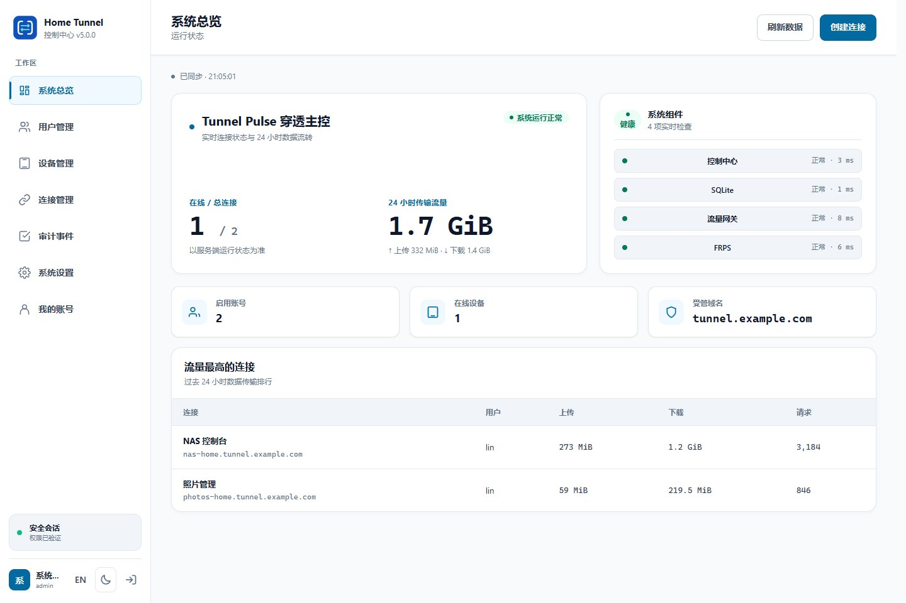
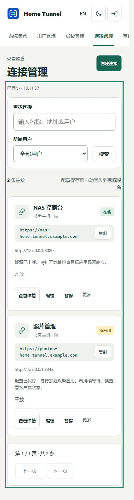
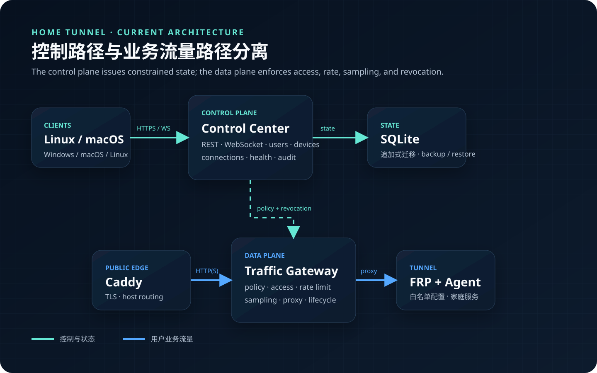

适合
- 远程访问 NAS 与家庭相册
- 安全发布 Home Assistant
- 分享短期开发预览
- 需要用户、设备与带宽管理
Self-hosted · Apache-2.0 · Home services
Home Tunnel 是面向个人与家庭服务的自托管内网穿透平台，用可审计、可限速、可随时撤销的控制面，安全发布 NAS、Home Assistant 和开发服务。

真实构建证据
截图由仓库 UI Preview 加载当前生产 HTML、CSS 与原生 JavaScript 生成；未绘制虚构控制台，也没有连接真实部署。


适用边界
Home Tunnel 把公开入口、身份、策略、流量和审计集中到一个控制面，同时把客户端能力限制在管理员签发的配置范围内。
Quick Start
部署需要一台公网 Linux 主机、一个域名，以及能够访问家庭服务的 Linux 客户端。请先阅读自托管指南并替换全部示例值。
将控制台与隧道域名指向服务器，开放 TCP 80、443、7000。
使用仓库脚本生成本地密钥与 Compose 配置，再启动四个服务。
修改初始管理员密码，创建用户，从 Linux 客户端注册家庭设备。
git clone https://github.com/ZHanry/home-tunnel.git
cd home-tunnel
./deploy/scripts/new-selfhost-config.sh \
tunnel.example.com frps.example.com \
console.example.com admin@example.com
docker compose config --quiet
docker compose pull
docker compose up -d
docker compose ps公开支持矩阵
v3.0.0 从 v3.0.0-rc.1 的同一提交与同一套不可变资产提升。“Stable”只用于完整验证的平台；Windows x64 EXE 明确标为自签名 Experimental。
| 组件 | 平台 | 状态 | 分发与限制 |
|---|---|---|---|
| 服务端 | Linux amd64 / arm64 | Stable | 容器与源码构建；稳定版要求完整双架构矩阵。 |
| Headless 客户端 | Linux amd64 / arm64 | Stable | systemd 服务，支持实时配置和安全轮询。 |
| Headless 客户端 | macOS amd64 / arm64 | Beta | launchd 包；需完成包结构和升级验证。 |
| 图形客户端 | Windows 10 / 11 x64 | Experimental | Release 提供自签名 EXE、校验和、SBOM 与来源证明；Windows 会提示未知发布者。 |
Security by boundaries
控制面只签发允许的连接和短期租约；客户端 Agent 再次核对服务器地址、域名、端口与代理类型，拒绝任意 FRP 配置。
生产依赖审计、CodeQL、多语言 CI、Secret Scanning 与 Push Protection 构成合并前证据链。
WebSocket 总负载、碎片与缓冲分块均有明确上限；异常断连后连接计数必须回收且可重新连接。
疑似漏洞不要创建公开 Issue。请通过 GitHub 私密漏洞报告通道提交最小复现与影响范围。
FAQ
Home Tunnel 在 FRP 之上增加用户、设备、连接、短期租约、访问控制、限速、采样与审计，并限制 Agent 只能执行控制中心签发的配置。
不建议把管理控制台作为公开演示站。Pages 仅展示本地夹具生成的静态截图，不连接任何真实部署。
当前 EXE 使用临时自签名证书并作为 Experimental 资产发布。请核对 Release 的 SHA-256 与 Sigstore 证据；可信发布者提示仍需要公开 Authenticode 证书和受保护签名环境。
不会。Pages 只接收聚合访问与点击事件；部署反馈也明确禁止提交域名、IP、令牌或凭据。